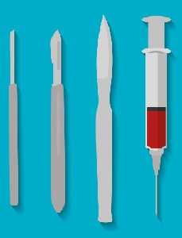

Unidad de video endoscopía diagnóstica y terapéutica
Somos los pioneros, con más de 12 años de experiencia ofreciendo el servicio de endoscopía diagnóstica y terapéutica para caninos, felinos y animales silvestres.
Unidad de cirugía invasión laparoscópica
Ofrecemos el servicio de cirugía de mínima invasión laparoscópica, a través de un staff de médicos altamente calificados, infraestructura y equipamientos de última generación.
Unidad de medicina reproductiva y banco de semen
Contamos con los últimos protocolos diagnósticos y terapéuticos para el manejo de las enfermedades que afectan el sistema reproductor de nuestras mascotas. Y desde hace dos años, venimos ofreciendo el servicio de congelamiento de semen, bajo los protocolos de CLONE USA.